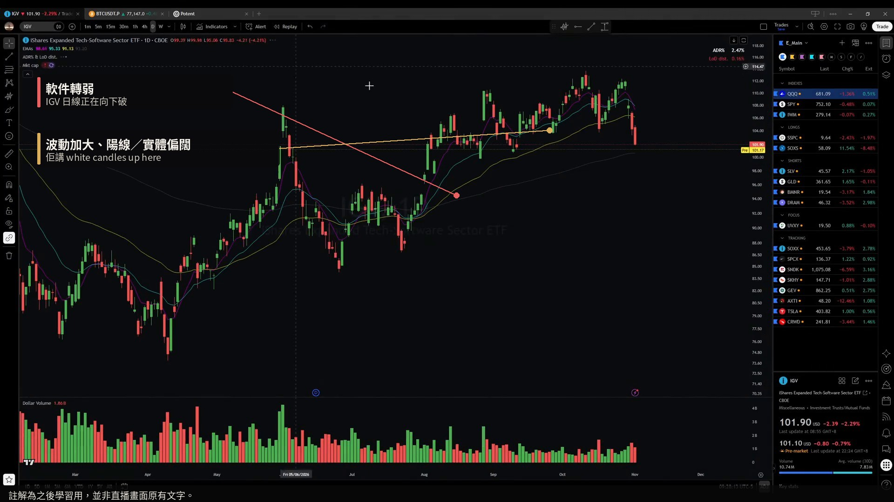
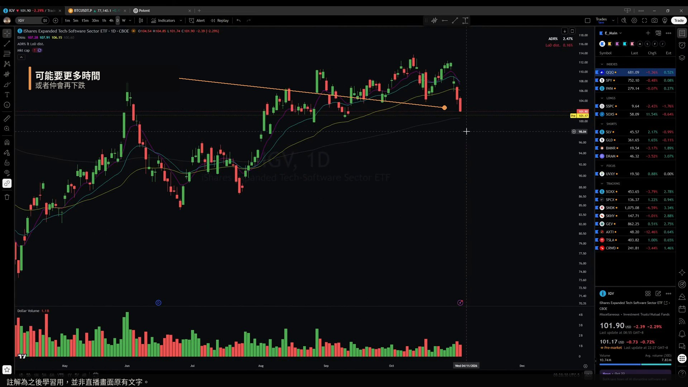
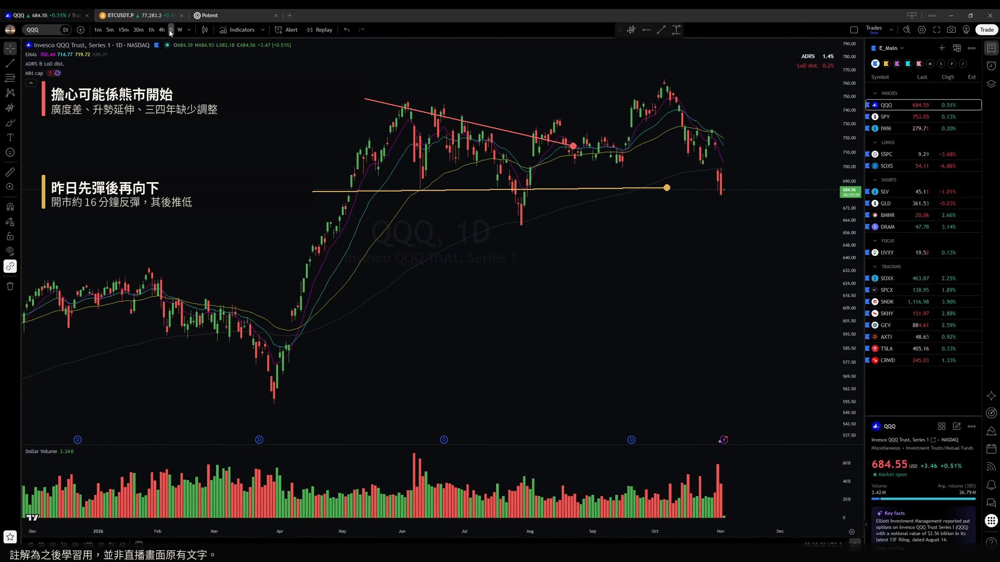

概要
昨日反應差，軟件轉弱，廣度令佢擔心
06:07 開始，佢回顧昨日：收市前反應頗差，開市頭約 16 分鐘有反彈，之後全日再被推低。畫面先後停喺 IGV 日線同 QQQ 日線。佢唔鍾意波動加大、上面嗰啲偏闊／白蠟燭，覺得可能要更多時間，或者仲會再下跌。之後亦話想見到一啲恐慌，半導體已有少少，但板塊以外仍然未見到向下加速。08:49 前後切到 QQQ 日線時，佢話有少少擔心呢個可能係熊市開始：廣度好差、之前升勢延伸得好遠，同埋過去三四年缺少調整。
06:00 前後畫面曾經出現 PLTR，但嗰陣對白係講緊昨日大市反應，本頁唔把呢句歸入 Palantir。中間靜音翻過 INTC、SHOP、QCOM 等，唔單獨成科。
圖一 · 主圖
IGV 日線：軟件轉弱、波動加大
直播 06:23

原話
So yesterday's we got a pretty ugly reaction till the close. We got a bounce in the early in the first 16 minutes and then just got pushing down in the rest of the day. Softwares is breaking lower. I really don't like the increasing volatility, the white candles up here.
昨日到收市反應頗差。開市頭 16 分鐘有反彈，之後全日再被推低。軟件正在向下破。我真係唔鍾意呢度波動加大，同埋上面嗰啲白蠟燭。
點樣讀
講軟件轉弱嗰陣，畫面係 IGV 日線。價格由高位回落，近期波動同蠟燭實體都睇得出比早段大。
「white candles」係佢對波動同蠟燭形態嘅觀察，唔好讀成已經確認下一步一定大跌。佢跟住就話可能要更多時間，或者仲會再跌。
圖二
IGV 日線：可能要更多時間，或者再跌
直播 06:40

原話
It probably suggests we may need a little bit more time, or maybe we're just going to see more downside.
呢個可能表示我哋要多啲時間，又或者只係會再見到更多下跌。
點樣讀
同一隻 IGV 日線，佢把「波動加大、闊蠟燭」讀成兩個可能：整理要更耐，或者跌勢未完。呢科要學嘅係呢種保留，唔好寫成已經斷定方向。
圖三
QQQ 日線：廣度差，擔心可能係熊市開始
直播 09:00

原話
And I would really like to see some panics coming in. So far we're getting some in the semi sector, but outside of the semi sector, like things are still doing fine, like not really seeing the acceleration to the downside.
我好想見到有恐慌出現。到而家半導體板塊有少少，但喺半導體以外，事情仍然做得幾好，未真正見到向下加速。
原話
Things are just not looking good, and I am a little bit concerned that this could be the start of a bear market, given that the really poor breadth, the extension of the previous moves, and the lack of correction in the past three to four years.
事情睇落都唔好。我有少少擔心呢個可能係熊市開始，因為廣度真係好差、之前嘅升勢延伸得好遠，同埋過去三四年都缺少調整。
點樣讀
講廣度同熊市呢幾句時，畫面主要係 QQQ 日線。昨日嗰段「先彈約 16 分鐘再推低」，可以同圖上最近呢段日內走勢一齊對。
「可能係熊市開始」係佢當時嘅擔憂，理由係廣度、延伸同多年缺少調整，唔係已經確認嘅結論。半導體以外「未見向下加速」，亦要同呢句擔憂一齊讀，唔好只抽其中一句。
附註
注意事項
- 06:00 前後畫面出現過 PLTR，但對白係講昨日大市反應，本頁唔把呢句當成 Palantir 分析。
- 07:03 之後有一段「今日唔覺得多嘢發生」，中間再靜音翻過 INTC、SHOP、QCOM 等，冇獨立讀圖，故唔出圖。
- Whisper 把 breadth 聽成 breath；YouTube 自動字幕係 poor breadth。本頁按字幕同語境更正，並喺原話註明。
- 畫面睇唔到成交價、倉位大細或者損益，所以唔寫死呢啲數字。